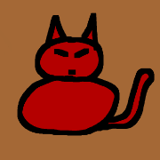
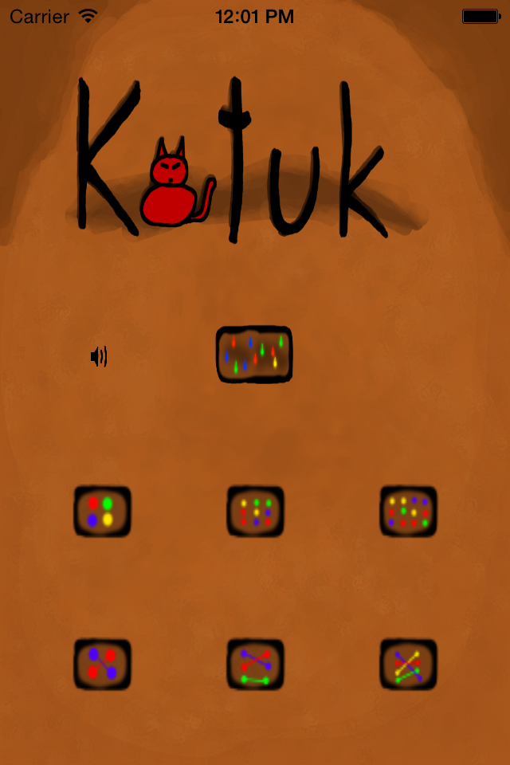
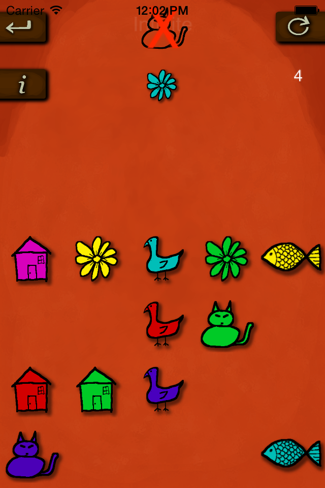
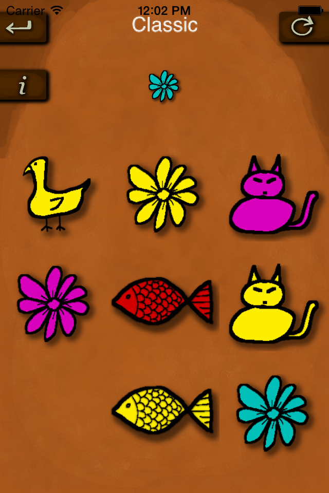
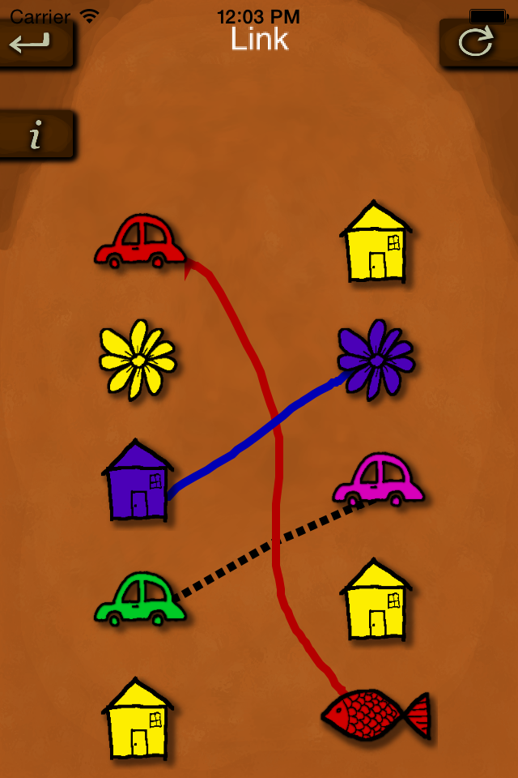

About
I'm a professionnal software engineer and develop mobile apps and games just for the fun of it.
I've been programming in many fields and languages, including for a major game development company.
 Katuk
Katuk contains 3 games.
In all three games there is a sequence where each piece has to be of the same color or the same shape as the
preceding one.
In the first game, new pieces appear and you must go fast in touching as many as possible, always following
the correct sequence.
The piece you just touch goes to the top, so look at the top to know the color or shape you must now
find. Many cats in a row gives a bonus. When there's a crossed out cat at the top and the background becomes
reddish, it means that for the time being, cats are not allowed and would end the game. Touching a drawing
with the wrong color or shape will also end the game. Compare your score with your friends !
The second game is a puzzle where you must find the correct sequence that will enable you to clear the board.
The key is often to start with the correct drawing. The second and third games have 3 levels with an
increasing number of drawings. You can play multiple times the same levels. You will get a new set of
drawings each time.
The third game is one where you must match drawings of the left column with those of the right. Draw lines
with your finger to link them.
Katuk is available for iPad & iPhone on the App Store.
Some screen-shots of the game:
 
 
 Labysol
Labysol
Labysol is a game where you need to complete a path out of a maze, using the tiles that show up at the top.
The less tiles you use, the more points you get.
You position the tiles by moving them with your finger.
You can put them in an empty space on the maze, but you can as well cover an existing tile.
You can change your mind and move your tile to a new position, as long as you've not touch the next tile.
If a tile is not useful, put it anywhere, including outside of the maze if you wish.
This will count as a move, lowering you score.
When you have a path from the IN to the OUT, just press DONE to get your score on the score board.
But you can also use some extra tiles to try to have your path reach more bonus tiles, thus increasing your score.
Labysol is available for iPad & iPhone on the App Store.
This is how the game looks on iPad:


And this is the game on iPhone: